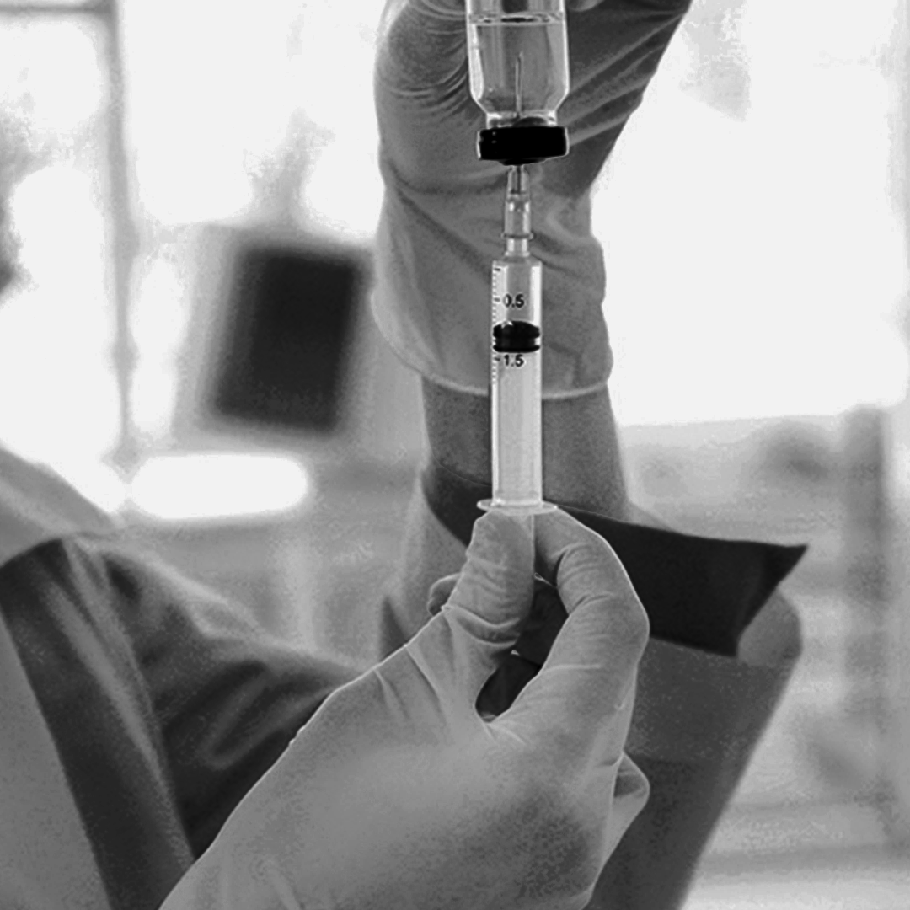

SAÚDE · CURSO TÉCNICOPresencial
Técnico em Enfermagem
Formação teórica e prática para atividades de promoção, prevenção, recuperação e reabilitação em saúde.
- Manhã, tarde, noite ou sábados
- Ensino Médio concluído ou em curso
- A partir de 16 anos
CEAP CURITIBA · FUNDADO EM 2002
Cursos técnicos e profissionalizantes para transformar conhecimento em uma nova habilidade — na Saúde, no Aperfeiçoamento e na Indústria.
ESCOLHA COM CLAREZA
Compare modalidade, duração e requisitos informados nas páginas oficiais. Datas de início e investimento devem ser consultados com a equipe.
Formação teórica e prática para atividades de promoção, prevenção, recuperação e reabilitação em saúde.
Capacitação para rotinas, produtos, armazenamento e dispensação no ambiente de farmácias.
Atendimento pré-hospitalar e suporte básico de vida para Técnicos em Enfermagem.
Conteúdo objetivo e prática em laboratório para técnicas de coleta com segurança e eficiência.
Operação adequada da máquina, manutenção e práticas de segurança conforme NR 11 e NR 12.
Medição, desenho técnico, ferramentas, materiais e processos da indústria metalmecânica.
Não encontrou o que procura? Consulte a relação de cursos no site oficial ↗

FORMAÇÃO PRESENCIALTÉCNICO EM ENFERMAGEM
O curso prepara para atividades de saúde com excelência, qualidade, segurança e aplicação das normas de biossegurança.
Erasto Gaertner · Pequeno Príncipe · Evangélico Mackenzie · FEAES · Prefeitura de Curitiba, entre outros listados na página oficial.
ESTRUTURA PARA APRENDER
Fundado em 2002, o CEAP mantém uma estrutura voltada à formação profissional em Curitiba.
Laboratórios de informática e enfermagem para apoiar a aprendizagem.
Ambientes com computador, caixa de som e projetor.
Profissionais com experiência e vivência em suas áreas, segundo o CEAP.
Estacionamento próprio com acesso gratuito aos alunos.
SEU PRÓXIMO PASSO
Fale com a equipe para consultar turmas, horários disponíveis, investimento e como se inscrever.
Conversar pelo WhatsApp